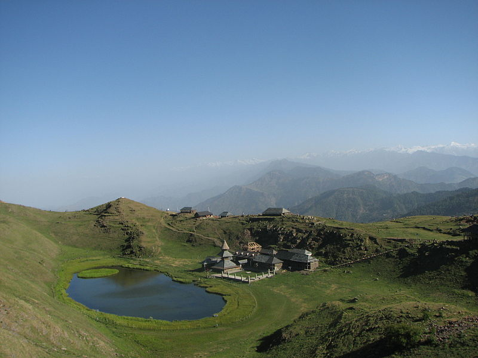
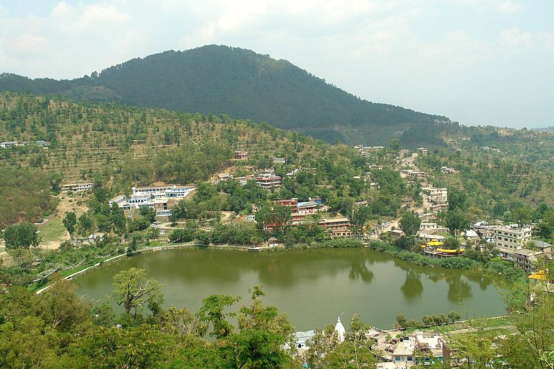

Mandi district (earlier known as Mandavya Nagar) is one of the central districts of Himachal Pradesh state in northern India. Mandi town is the headquarters of Mandi district. The town has mythological and historical significance and boasts of a unique temple architecture. It is referred to as Chhota Kashi as there are many ancient temples in the city and on the banks of river Beas. The Beas flows through the town and hills, which makes this town more scenic. It has a serene ambiance though the modern development has made its inroads here in infrastructural developments.
Prashar Lake lies 49 km north of Mandi, Himachal Pradesh, India, with a three storied pagoda-like temple dedicated to the sage Prashar. The lake is located at a height of 2730 m above sea level. With deep blue waters, the lake is held sacred to the sage Prashar and he is regarded to have meditated there. Surrounded by snow-capped peaks and looking down on the fast flowing river Beas, the lake can be approached via Drang. The temple was built in the thirteenth century and legend has it was built by a baby from a single tree. The lake has a floating island in it and it is said to be unclear how deep it is, with a diver not being able to determine its depth.
Mythology says that this lake was formed by Pandawas when they were on their way after Mahabharata with Deity Kamrunag (based on which this entire valley is known as Kamru Valley today) to find best place for their teacher, Dev Kamrunag and Deity love the isolation of this place so much that he decided to stay here for the rest of his life. On his request, Bheem one of the Pandava brothers formed the lake by pushing his elbow and forearm on the peak of the mountain. And that is the reason believed by locals after oval-shaped lake with depth unknown. Many a time in storms an almost 30-meter-tall cedar tree would fall into the lake to disappear.
Rewalsar Lake is a mid-altitude lake located on a mountain spur in the Mandi district, 22.5 km south-west from Mandi, in India. Its elevation is about 1,360 m above sea level. The lake is shaped like a square with the shoreline of about 735 m. It is held as a sacred spot for Hindus, Sikhs and Buddhists. Shrine to Mandarava in cave above Lake Rewalsar. There are three Buddhist monasteries at Riwalsar. The lake also has three Hindu temples dedicated to Lord Krishna, Lord Shiva and to the sage Lomas. Another holy lake, Kunt Bhyog which is about 1,750 m above sea level lies above Rewalsar.
It is associated with the escape of 'Pandavas' from the burning palace of wax—an episode from the epic Mahabharata. It was from here that the Indian teacher and 'Tantric' Padmasambhava left for Tibet. Known to the Tibetans as 'Guru Rinpoche', the Precious Master, it was under Padmasambhava's influence that Mahayana Buddhism spread over Tibet. There are islands of floating reed on Rewalsar lake and the spirit of Padmasambhava is said to reside in them. It is here that the sage Lomas did penance in devotion to Lord Shiva, and the Sikh guru Gobind Singh (22 December 1666 – 7 October 1708), the tenth Guru of Sikhism, also resided here for one month. The Sisu fair held in late February/early march, and the festival of Baisakhi are important events at Rewalsar.